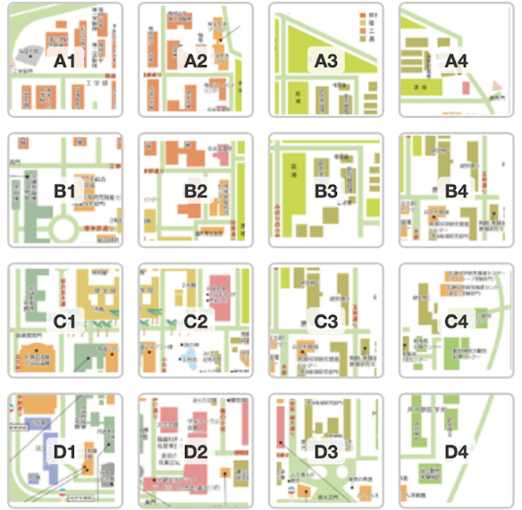

Welcom to the plant map project!
In Kagoshima University
At Korimoto Campus in Kagoshima university, we try to correct information of the kinds of plant.
Let's created the plant map in Kagoshima university!
About this project
We create the plant map at Korimoto Campus in Kagoshima university.
You try to serch vary kinds of plant and take pictures!!!!!
What's aim of this project?
To let everyone think environmental conservation freely and familiar.
Also, to try to search and know the vary kinds of plant by us.
How to join this project
- Korimoto Campas area is divided 4×4.
From this areas, please select one area you want to reserch below (Restricted area :
Excepting farm).
The font in pictures is area name.

- In your select area, searce plants.
If you find a plant, you take a picture.
- Please login from this google form.
- Please fill in some data : Plant name, Resistered, date, statues, and upload your picture.
- As needed, you can write comments.
Let's go find some plants!